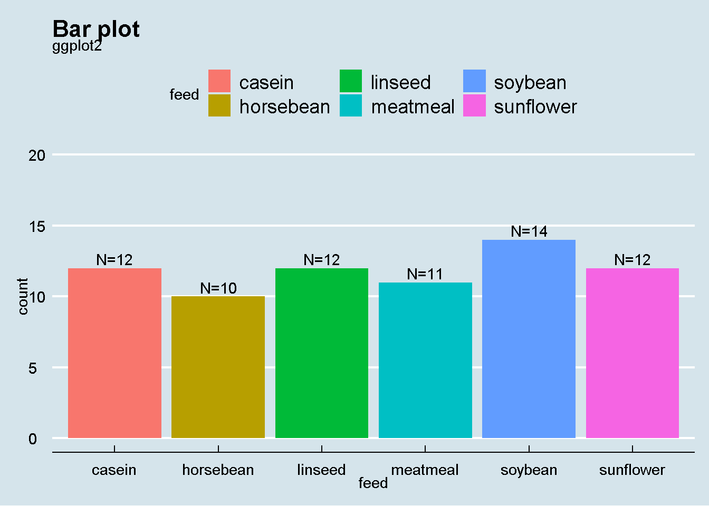

Creating a bar plot is very easy using ggplot2 . I will be using chicksweight data for this example
first lets load the package
## Warning: package 'ggplot2' was built under R version 3.6.3## Warning: package 'ggthemes' was built under R version 3.6.3## Warning: package 'dplyr' was built under R version 3.6.3##
## Attaching package: 'dplyr'## The following objects are masked from 'package:stats':
##
## filter, lag## The following objects are masked from 'package:base':
##
## intersect, setdiff, setequal, union## 'data.frame': 71 obs. of 2 variables:
## $ weight: num 179 160 136 227 217 168 108 124 143 140 ...
## $ feed : Factor w/ 6 levels "casein","horsebean",..: 2 2 2 2 2 2 2 2 2 2 ...1 lets plot
plot1<-chickwts %>%
count(feed) %>%
ggplot() +
aes(x=feed,weights=n)+
geom_bar(aes(fill=feed))+
ylim(c(0,20))+
geom_text(aes(x=feed,y=n,label=paste0("N=",n)),vjust=-0.3)+
labs(
title = "Bar plot",
subtitle = paste0("ggplot2")
)+theme_economist()
plot1
lets add simple interactivity using plotly